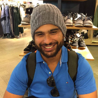

Jake Duran Zerafa
Jake Duran Zerafa
About me

read more ...
| Have you any programming or web design experience? | Yes, only a minimal amount of web programming experience but looking to further my knowledge. |
|---|---|
| Do you see yourself as a programmer or designer, or both? | I would like to say both, at this present time I am currently a full time graphic designer but my main goal is to get into web development. |
| What has brought you to this course at RMIT? | It's a core unit towards building my fundamental knowledge and understanding of common web programming. |
| What are you hoping to get out of the course? | A solid understanding of programming techniques and workflow practises to assist with further development. |
| Assignments allow for individual or paried work. What strengths do you have and what strengths would you like your assignment partner to have? | My strengths are leaning towards the visual design and aestheics of a website. I would like to partner up with someone who compliments this and/or has stronger core understanding and functional programming strengths. |
| What websites do you use the most? (NB: "family friendly" !) | Kotaku, youtube, amazon, ebay |
| Do you have any interests or hobbies? | Muay Thai, Freelance designing, Gaming |